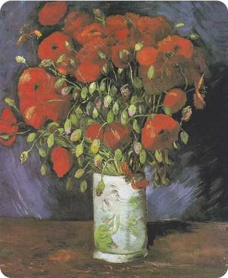

Vase with Poppies
Year - 1886
Medium - Oil on canvas
Dimensions - 56.0 cm × 46.5 cm (22.0 in × 18.3 in)
Flowers were the subject of many of van Gogh's paintings in Paris,
and one of his many interests due in great part to his regard for
flowers. In Paris friends and acquaintances sent bouquets of flowers
weekly for his still life paintings. He also purchased bouquets
inexpensively, choosing flowers in a variety of colors for his
paintings.